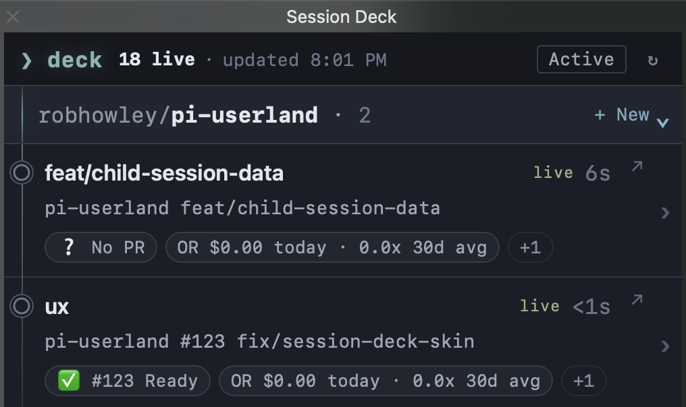
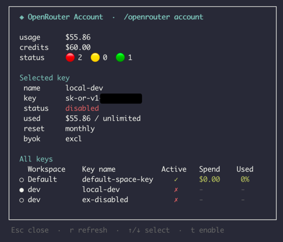

pi-session-deck
Live Pi sessions by repo, fast return to the right terminal, and new isolated worktree launches from one deck.
/session-deck
README> Session Deck for Pi
See live sessions by repo, return to the right terminal, and launch the next agent in an isolated worktree.
pi install npm:@robhowley/pi-session-deck
Run /session-deck

Live Pi sessions by repo, fast return to the right terminal, and new isolated worktree launches from one deck.
/session-deck
READMEOpenRouter usage/account overlays, model sync, API key management, and session tagging for Pi.

/openrouter usage · /openrouter account
READMEShow session cost/context health and cache rate in the Pi status bar.
README example · 🟡 ctx watch · cache 98%
READMEReport exact-PR merge readiness and watch supported repair states.
/merge-ready watch --url https://github.com/OWNER/REPO/pull/64
READMEParse noisy command output into compact results while preserving full logs.
README pytest fixture · 3 tests · 262 raw tokens → 56 structured tokens
READMEApply configurable block, ask, or allow decisions to destructive bash commands.
Seatbelt rule outcomes · BLOCK · ASK · ALLOW
READMEReplace thinking text with built-in themes or a custom verbs file.
doc-emrick examples · Shunting… · Sliding… · Fiddling…
READMECopy a command below and run it in your terminal.
git and authenticated
gh; check with gh auth status.
OPENROUTER_MANAGEMENT_KEY or
OPENROUTER_API_KEY.
/session-deck does not require iTerm2 setup.
pi install npm:@robhowley/pi-session-deck
pi install npm:@robhowley/pi-openrouter
pi install npm:@robhowley/pi-session-hygiene
pi install npm:@robhowley/pi-merge-ready
pi install npm:@robhowley/pi-structured-return
pi install npm:@robhowley/pi-yolo-seatbelt
pi install npm:@robhowley/pi-spinner-verbs
{kind=link}